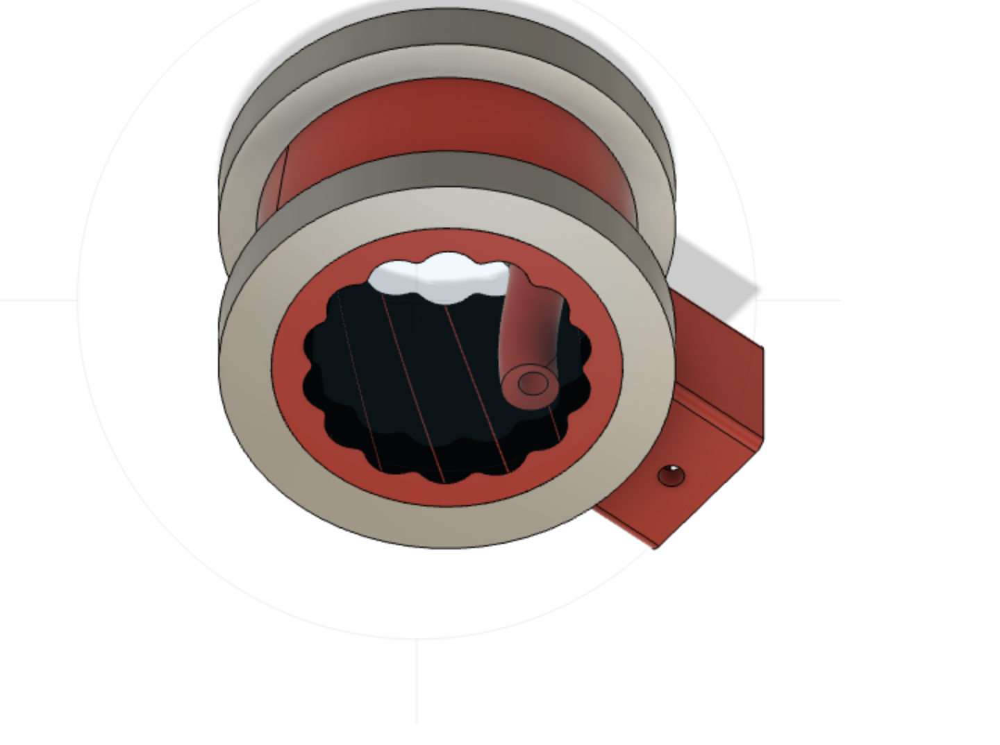

Final Project
Actuators
Brushless vs Stepper vs Servo
There are three main types of motors that I have considered: servo motors, DC motors, and stepper motors. Each type of motor has its own benefits and drawbacks. Servo motors are a popular choice for building robot arms because they are precise and easy to control. They are designed to rotate to a specific angle and hold that position until a new signal is received. This makes them ideal for applications that require precise control, such as moving robot arms. Another benefit of servo motors is that they are relatively inexpensive and widely available. However, one drawback of servo motors is that they have limited torque, which means they may not be suitable for heavy loads.
DC motors are another popular choice because they are powerful and vheap. They are designed to spin continuously in one direction, which makes them helpful for applications that require high torque. They are also relatively inexpensive/ However, one drawback of DC motors is that they require more complex control circuits than servo motors. This means that they may not be as easy to control, and require a lot of expertise to control precisely.
Stepper motors are a third option for building robot arms. They are designed to move in precise steps, which makes them ideal for applications that require precise control, such as moving a robot arm to a specific position. They are also relatively easy to control and can be used with simple control circuits. However, one drawback of stepper motors is that they may not be as powerful as DC motors or as precise as servo motors. This means that they may not be suitable for all projects though they are a good option for this project.
Based on my research, stepper motors seem to be the "best of both worlds" result. They are powerful enough to handle the weight of the arm, but also precise enough to move the arm to a specific position. They are also relatively inexpensive and easy to control, which makes them a good option for this project.
Actuator Type/Gearing
Cycloidal gears have several benefits, such as their ability to handle high torque loads and provide a smooth, vibration-free operation. This is especially useful in robotic applications where precision and accuracy are essential. Additionally, cycloidal gears have a compact design, allowing for a smaller overall size and weight of the robot arm.
However, there are also drawbacks to using cycloidal gears. One of the main challenges is the difficulty in manufacturing these gears, which requires high precision machinery and expertise. The cost of manufacturing and purchasing these gears may be higher than planetary gears, which can impact the overall budget of the project. Additionally, cycloidal gears may have a lower efficiency compared to planetary gears, which can result in higher energy consumption and heat generation which may be a problem for 3D printed gears.
On the other hand, planetary gears have their own set of benefits and drawbacks. One advantage of planetary gears is their high efficiency, which can reduce energy consumption and heat generation. They are also relatively easy to manufacture and assemble, making them a cost-effective solution for hobby projects. However, planetary gears may not be able to handle as high torque loads as cycloidal gears, which can limit their use in certain applications. Additionally, the multiple components and complexity of the planetary gear system can make it so they need more precision in order to function properly.
Progress/Decisions so far
Thus far I have tested using Servo vs Stepper motors and a cycloidal gear design shown below.

This design has minimal backlash but skips a lot so I will be trying other simpler designs this week.